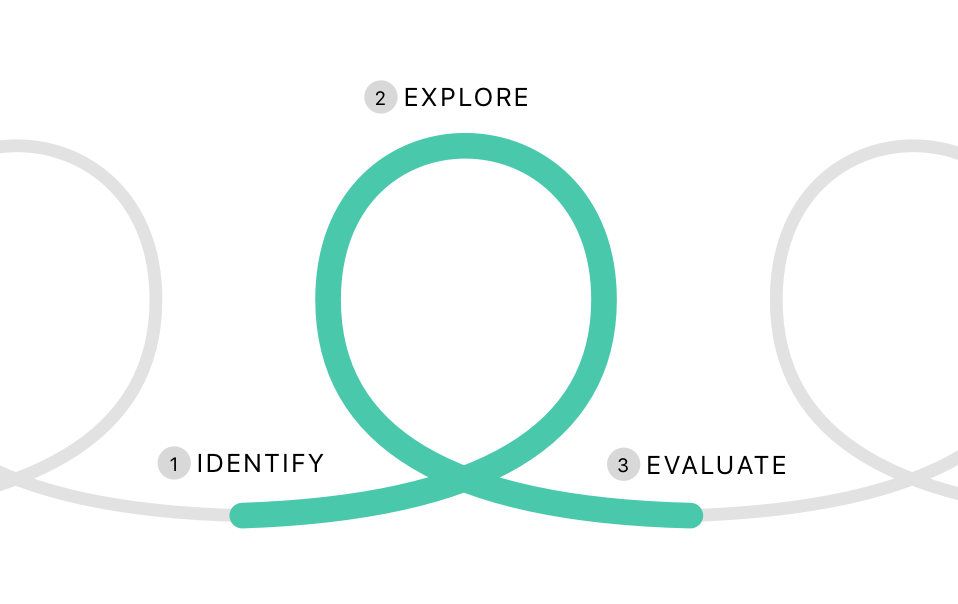
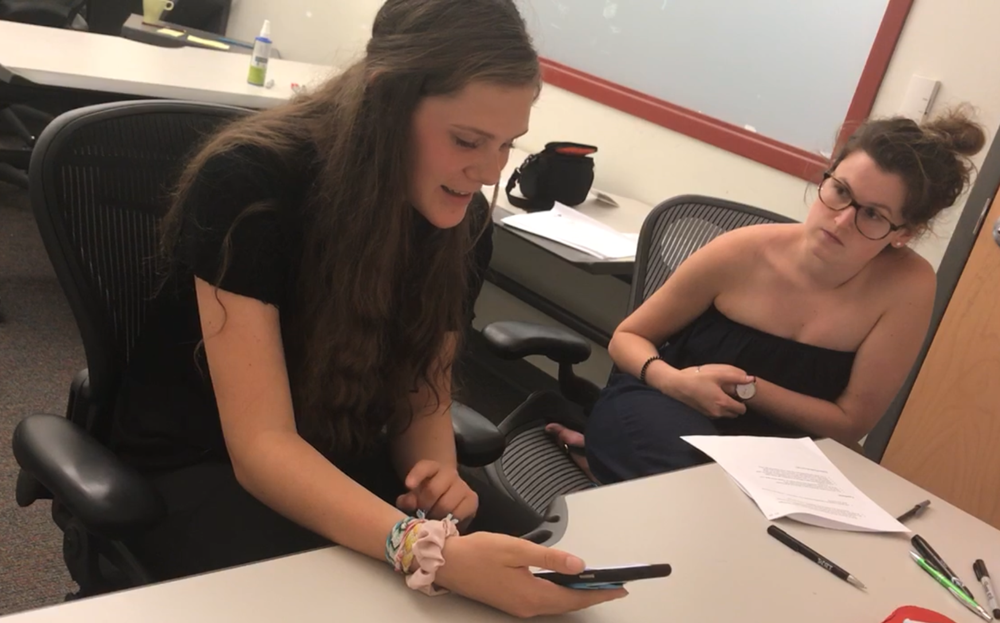

FutureFinder
Understanding how teens explore careers, with the regional economy in mind
The Challenge
Our clients came to us for a product or service that could educate high schoolers about high-demand careers in the Pittburgh Region’s future. We reframed the challenge around solving the needs of teens as they explore career directions, promoting both personal and regional growth.
The Research
Three months of exploratory research broadly investigated the career planning space in high school and beyond, leading to three areas of design opportunity. Research was then a continuous back-and-forth with design, including two rounds of user testing at very high fidelity.
The Impact
Two rounds of user testing strongly validated the prototyped app “FutureFinder” and met client goals. 40% of all “favorited” careers were in high demand in the Pittsburgh Region, with all target teens discovering new careers that matched interests.
BACKGROUND
The Pittsburgh Region’s Future & Our Clients’ Vision
Our client, Allegheny Conference, is a non-profit concerned with the Pittsburgh Region’s economic future and development. Through this initiative with Numo, they wanted to increase future high-demand employment by targeting high schoolers.
Allegheny Conference's research showed that the region would experience shortfalls in important career sectors if current trends continue (80,000 positions by 2025). They are working on multiple economic initiatives to address this. But in this project they approached the problem from the beginning. If students knew more about high-demand careers before making decisions like college, the region might create more in-demand talent.
Their initial vision was that data visualizations could help students make better decisions about what future local jobs would meet their financial goals. However, they wanted us to broadly explore and see if we came up with a similar or different solution. We quickly realized data communication was not enough. Our research and design had to place teens' career motivations first, to find overlap between personal and regional value.
The Pittsburgh Region is projected to have a shortfall of 80,000 high-demand positions by 2025. Allegheny Conference is working on multiple initiatives like attracting talent to the region. However, in this project they wanted to find a way local students could help fill this demand.
PHASE 1
Generative Research: Exploring Teen Career Planning
We had two months to deeply investigate how high schoolers (and their influencing adults) plan their futures. While keeping an eye out for high-demand career selection, we were inductively looking to see what needs and problems arose.
This was a very collaborative process with the entire team participating in all project stages. As Research Lead, I owned the research plan, authored most protocols, and led synthesis activities.
Research Strategy: Staying Open but Narrowing Our Target
Our project scope was extremely broad, which was a blessing and a curse. We just had to make something that helped students plan careers while addressing the high-demand workforce. We had the time to inductively discover specific needs and how these two agendas might intersect.
The preliminary research goals were to:
- Broadly discover the career planning needs of students and their supporting adults
- Narrow which students need the most intervention
- Uncover the best methods or people to help students make change

The research team generating, grouping, and prioritizing research questions.
Interviews Across Stakeholders: Assessing the Landscape
Our first research project was to get familiar with the ecosystem of career planning in middle and high school. In a literature review we looked at education policy, career social psychology, and multi-cultural considerations that reflect Pittsburghs' demographics.
Remote interviews were then a quick and cost-effective way to probe a wide variety of first-hand experiences. We did 15 interviews across guidance counselors, parents, teachers, policy experts, non-profits, and students. Our topics included behavior related to career planning and advising, especially pain points and obstacles people faced.
Clustering interview notes into an affinity diagram, looking for patterns and insights.

Students' networks of career advice are often disconnected. Parents, guidance counselors, and teachers rarely communicate about students and are sometimes even in conflict.
Guidance counselors and teachers are often overworked with little time to devote to career advising. They are less promising targets for design interventions.
Student Interviews: A Deeper Dive
Realizing that early high school students were our most promising target for an intervention, we needed a deeper dive into how a diverse array of high schoolers thought of their career futures and their challenges. We interviewed 12 more high schoolers, trying to get a mix of public and private schools in the city and more rural areas.
We were interested in a diversity of teens' internal experiences while planning career futures. Interviews probed on topics of their current career and post-high school plans, what in their past influenced them, interactions with adults/schools, and uncertainties they see in their future.
From these interviews, we clustered interview quotes into two levels of insights with an affinity diagram. Affinity diagraming helped the large research team synthesize takeaways and reach group understanding faster than a traditional coding process.

Our affinity diagram of over 100 quotes/notes from 14 student interviews, clustered into insights.
Students' knowledge of potential careers is often limitted to and influenced by their parental and close networks.
Hands-on experiences and first-hand accounts were the most influential moments that guided students.
There are many cultural barriers against career planning in high school, including an overwhelming focus on colleges.
Adult Career Journeys: What Worked, What Didn’t?
After spending so much time with students, a teammate and I realized we needed to speak with adults who had actually gone through career journeys. What worked for them? What didn’t? We interviewed eight Pittsburgh-area adults (half in high-demand careers), taking notes in journey format for speedy synthesis.
The interviews were boiled down to three journies of job exploration. Those who found careers early, those that found one after some trial and error, and those that had not found a satisfying career yet.

Notes of an interview as a journey. This PT assistant went to college undeclared and chose a major last-minute. He wanted to go back to school to be a full time therapist, but couldn't afford to while starting a family.
The rough journey of people who found a career fit after trial and error. Notes include commonalities and pain points.

People generally "looped" through different majors and careers until they found a direction that stuck. Those who found well-matched careers described it as an “Aha!” moment.
For those that had not found satisfying careers, many felt “trapped” by mounting responsibilities as pivoting or going back to school became difficult. Exploring earlier could have allowed for better planning and decision-making.
School Visit: Codesign Workshops & Inquiries
Hoping to gain more context on Pittsburgh area high schoolers in person, we worked on getting into a high school for about two months.
We finally partnered with Elizabeth Forward High School, in a somewhat rural suburb. We negotiated working with four classrooms of early high schoolers, as well as a downtime to do contextual inquiries with teachers and guidance counselors.
To make the most of the 60+ students we were working with, we turned to codesign workshop activities. The first workshop in each group was research-oriented, quickly gathering info about student goals, planning behavior, and influences. The second workshop brought teens together to collaborate on solutions to career planning problems, using provided materials. We wanted to see what teens felt was difficult and what solutions they were drawn to.
These workshops accomplished multiple things: gaining school context, gathering a wider sample of career prep behavior, and seeing what solutions teens created themselves. For more info on workshop design, you can read my Medium post about our school visit!

A major outcome of the workshops were Archetypes, groupings of career planning behavior. They gave us a common language to talk about certain types of behavior.

Gathering career planning worksheets filled out by 9th-graders at Elizabeth Forward High School
A collaborative solution to a career planning scenario made by 9th-graders. Many students digrammed that finding mentors and starting career exploration were big roadblocks.
Design Opportunities from Generative Research
After each effort in our Exploratory Research, we had grouped insights and found main takeaways. As our big transition to design, we “walked the wall” and did a final pass reviewing all of our qualitative research together. The goal was to find connections and design opportunities across research projects.
We found dozens of insights and opportunities, large and small. Out of these, we identified three promising and impactful opportunities for design.
1. Expand students' career knowledge beyond their close networks.
2. Guide teens to identify interests, skills, and workstyles.
3. Foster experiencing career directions, such as hands-on learning.

Collecting and prioritizing major design opportunities after comparing qualitative research.
A central model from qualitative research was the "Career Discovery Loop." To find a career fit, people have to identify matches to careers, experience them at various levels, and finally reflect and adjust for the future. Designs had to take this continuous process into account.
PHASE 2
Iterative Research: Guiding Design Concepts
The next two months were dedicated to concepting and early design proceses, but we went back-and-forth with research activities such as concept testing. I’ll highlight the research-related areas of design. Throughout this process, we used design concepts and models of previous research to continually learn the biggest needs and potential value of these designs and services.
Storyboarding & ‘Speed Dating’
After weeks of design exercises and sprints, the team decided to do early concepting research with teens and parents.
The purpose was not to tell us precicely “which design was best,” but rather which needs and avenues our potential users gravitated towards. Four storyboards of our top initial ideas were created, keeping concepts high level but allowing people to see the steps involved. Through “speed dating” we showed them to students and parents, sparking conversation about what people would and wouldn’t do in future situations.

We showed students, parents, and teachers storyboards of initial design directions to test the waters of social boundaries and see which needs resonated.
Rapid Concept Testing with Mid-Fi Prototypes
After more weeks of design, we settled on three different ideas with very different implementation: a summer job rotation program, a structured game, and a platform for open exploration. Each met our two goals of increaseing career exposure and providing first-hand information at various scales.
We A/B/C tested these concepts with teens, parents, and teachers. Storyboarding wasn’t a high enough fidelity for students/parents to understand their usage. Through click-through prototypes in InVision, we gave our potential users a hands-on view of what the products/services would feel like.
Students are busy, especially with extracurriculars. Our design had to be both quick to use and motivating for continued engagement.
Parents and students were highly interested in work-experience like summer jobs. However we pivoted away from in-person services towards digital due to scalability and cost of overhead.
Personas (Revisited)
From our workshops and interviewed, we had created Archetypes to capture segments of teen career planning behavior. These established a common language in the design team to talk about behavior. But as we went on, we found too many "exceptions" in concepting research. Although we didn’t feel the segmentation was “wrong,” it didn’t capture variables that were now relevant to our solutions and needs fulfillment. It felt too simple.
Another researcher and I went back into our qualitative data (more than 40 interviews and concept tests) with the lens of which variables we thought were actually mattering in career planning behavior (such as how open they were to exploring other options, age, and parent behavior).
We emerged with three new Personas, this time more nuanced and in stronger relation to our design work. This allowed us to balance needs and features in our core design and future roadmaps.
FINAL DESIGN
FutureFinder
Our final design, FutureFinder, is mobile app that helps high-school students explore careers based on their interests in only 10 minutes a day. It uses continuous career personality and workstyle quizes to match students to relevant, unexpected, and in-demand career options.
For a demo and more info on design decisions, please check out our product website.
PHASE 3
Evaluative Research: User Testing
The final phase was to evaluate our final designs for both functionality and usability, making (sometimes large) design tweaks.
First User Test & Cardsort
We did our first user test at a CMU summer camp (an efficient way to get high schoolers during the summer).
At this point, we had our final design but were still tweaking things. We actually A/B tested two different versions of the app in InVision. We varied the framing of the app - in one disguising the purpose of the app as simply "self-discovery" rather than careers. The number of questions and results were also varied. Finally, we tested three versions of the job cards themselves, which design couldn’t agree upon.
A card sort was done to rank students’ interest in job-related information. We wanted to see what info was important to teens to better design the job data vizualizations. I also synthesized a usability and feedback report deck to guide design's final iteration.
Students card-sorted which career-related info was most important to their exploration process. This led to a redesign of the job cards, and showed which info may be new and confusing to teens.
Teens trusted larger amounts of questions to "understand them" regardless of the actual algorithm
Disguising the app around "self-discovery" instead of career planning was poorly received. Teens could see through it and didn't like being misled.
Final User Test & Evaluation Metrics
With only a week left, we didn’t have time to make huge usability changes. Although we conducted think-aloud usability testing, we were mainly testing how successful it was in its current design.
Our major sucess metrics were:
- Are students discovering new careers that are relevant to their interests?
- How often are they favoriting jobs?
- What proportion of favorites are high-demand careers?
- Are students self-reporting interest and/or motivation to use the app?
I pushed for testing at very high fidelity with a working backend (done with Framer and Airtable). The prototypes needed to feel as real as possible, to see if teens were actually discovering new careers relevant to their interests. We spent a lot of time mocking up over 50 careers, a personality quiz, and a mock machine learning algorithm.
Our metrics performed very well. 41% of favorited jobs were in projected high-demand careers, double the rate the algorithm provided to students. In addition, almost all teens reported wanting to download the app unprompted. All of the target personas (minus Deep Diver) favorited careers they reported they had never considered before.

One student realized that astronomy was an interesting application of math that he had never considered before.
41% of favorited jobs were in high demand in PA
Teens felt that the app's design and content treated them like adults, that "you are in control of your future."